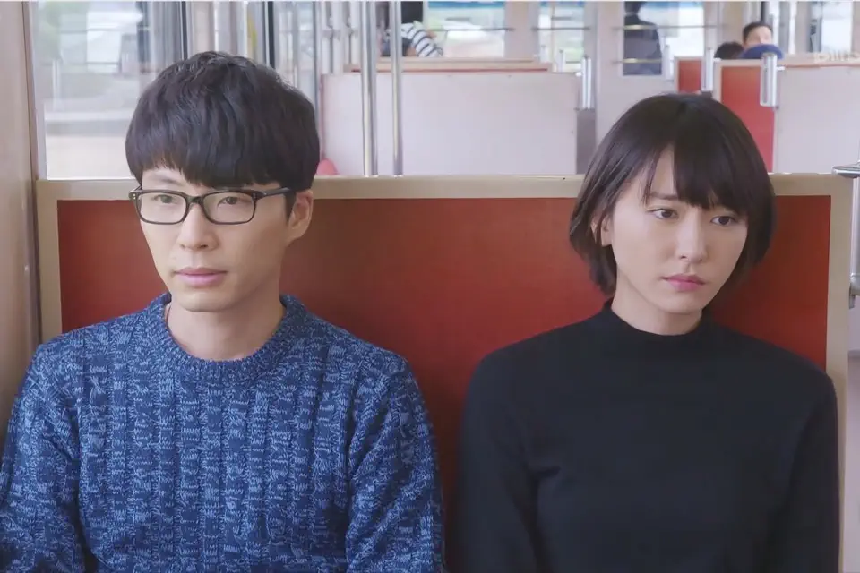

第6話「温泉一泊旅行にまつわるエトセトラ」 修善寺からの帰り列車 / 2016.11.15

M＝心の声 ／ 〔 〕＝場面の指示 ／ ＆＝二人同時
〔伊豆修善寺温泉への旅行帰りの列車車内にて〕
〔伊豆修善寺温泉的旅行归途，列车上〕
みくりM：あのとき……
那时候……
みくりM：何か、言ってくれるかと思った
还以为，他会替我说点什么
みくりM：もしも今、「手をつなぎましょう」って言ったら……
如果现在说“我们牵个手吧”……
〔イメージの平匡：「今は社員旅行中です」〕
〔想象中的平匡：“现在是员工旅行期间。”〕
みくりM：って怒られて……
大概会这样被驳回……
〔イメージのみくり：「新婚旅行のフリをするという仕事の最中でもあります」って食い下がったら……〕
〔想象中的美栗：“可这也正在执行‘假装新婚旅行’这份工作。”——如果我这样不肯退让……〕
〔イメージの平匡：「それは、グレーゾーンですね」〕
〔想象中的平匡：“那属于灰色地带呢。”〕
みくりM：なんて困った顔をして……仕方なく、手を出して……
他会露出那样为难的表情……然后无可奈何地伸出手……
みくりM：でも欲しいのは、仕方なくなんかじゃなくて……
可我想要的，并不是“无可奈何”这种东西……
みくりM：わたしは……平匡さんに、何を求めているんだろう？
我……到底在向平匡先生要什么呢？
平匡M：自分のほうが、みくりさんを知ってると思ったから。僕は知ってる。穏やかな微笑みも、温もりも、優しさも。
因为我觉得，是我更了解美栗。我知道。她平静的笑容，她的体温，她的温柔。
平匡M：もしも今、手を重ねたら
如果现在，把手覆上去
〔座席の上の二人の手、すぐ近くにある〕
〔座位扶手上，两人的手近在咫尺〕
平匡M：みくりさんは、どんな顔をするだろう
美栗会露出什么样的表情呢
みくりM：今までどおりでいい
维持原样就好
みくりM：もうやめる。もう疲れた
不做了。已经累了
〔みくり、涙がぽろっとこぼれる。気づかれないように拭う〕
〔美栗的眼泪掉了下来，她悄悄擦掉〕
みくりM：何もしない。何も求めない
什么都不做。什么都不求
みくりM：この旅が終われば、平穏な日常に戻る
这趟旅行一结束，就回到平静的日常
〔流れる景色〕
〔窗外掠过的景色〕
平匡M：あと、一駅…
还有一站……
みくりM：あと、一駅…
还有一站……
みくり＆平匡：……
……
みくりM：あと一駅…
还有一站……
平匡M：あと一駅…
还有一站……
みくりM：あと、一駅…
还有一站……
みくり＆平匡：……
……
みくり＆平匡M：永遠に、着かなければいいのに…
要是永远都不到站，就好了……
森山みくり／津崎平匡MORIYAMA MIKURI / TSUZAKI HIRAMASA